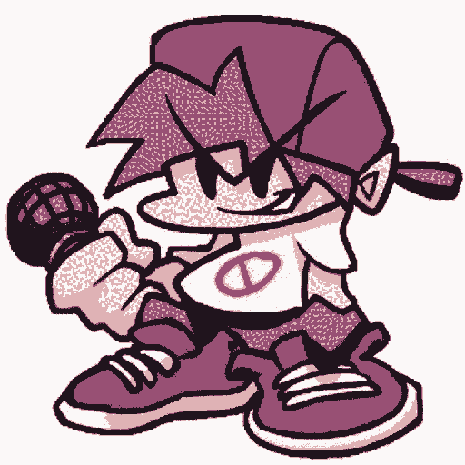

[!CAUTION]
Caso voc√™ queira instalar a versão (realmente) mais recente do mod usando o metodo doCode > Download as .ZIP, LEMRE-SE DE RENOMEAR A PASTA PARA "Imaturidade++", se voc√™ não fizer isso, metade das mecânicas não iram funcionar ü•≤
Oi, esse mod é um JOKE MOD, UM MOD DE [[ZUEIRA]], ele não foi feito pra OFENDER NINGUÉM.
Ele contem algumas mecânicas realmente legais, como usar (e abusar) do os.execute() para fazer coisas legais durante as músicas, usar Python para usar (e abusar) da GDI do Windows, usa shaders em C++ (eu acho) em algumas partes e muito mais! üòà
=====----- Imaturidade++/ImaturidadePlusPlus -----=====
Oi, esse mod é um JOKE MOD, UM MOD DE [[ZUEIRA]],
ele *não foi feito pra OFENDER NINGUÉM.*
A respeito da música LGBT, (quase) todos que participaram
da construção do mod são LGBTs (em geral).
Pretágio, CandyBro/CandyBoy, PBX/PedroBlox são OCs dos
membro do projeto.
Bambi originalmente é de um mod chamado VS Dave and
Bambi, ele NÃO É ORIGINAL.
Setas, scripts, shaders dos mods: Silly Billy, VS FLOOR,
FNF RIVALS, Golden Apple PE Port.
As únicas músicas compostas originalmente [[APENAS]] PARA
O MOD são: Byteperbit, Boquetephobia e Eternal.
Esse mod contém palavrões e luzes piscantes.
=====----- COMO JOGAR -----=====
## Requisitos:
- Psych Engine
- Metade de um Cérebro
## Não tá funcionando na minha versão:
Eu testei na psych 0.7.1, o mod usa alguns eventos/Scripts,
provavelmente deve funcionar mas versões 0.6.x.
## [[EU]] fiz um meme/música e gostaria que você
removesse ela do mod.
Converse [[FORMALMENTE]] e MOSTRE [[PROVAS]] no
meu email pessoal: patoflamejantetv@gmail.com
## Amei seu mod, eu quero botar mais músicas, fazer mais
coisa, te amar e ter três filhinhos: Julinho, Cleber e Jorge,
eu juro que vou pagar toda a pensão e nois vai ter uma
cachorro chamado paçoca e vamos viver felizes para
sempre.
Se você quer entrar na equipe do mod, me contate via
e-mail ou via Discord (@patoflamejantetv).
jq (jq.exe) is under MIT license.
7Zip CLI (7Za.exe) is under a bunch of licenses. (check https://github.com/PatoFlamejanteTV/ImaturidadePlusPlus/blob/main/7zip-License.txt for more details).
